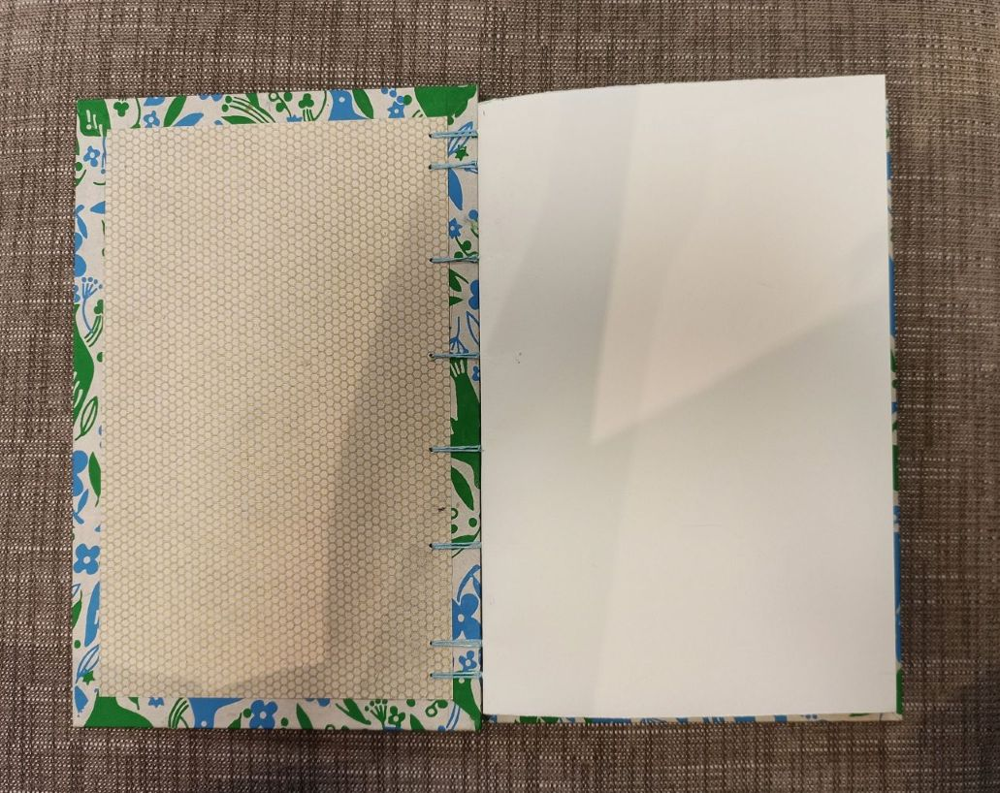
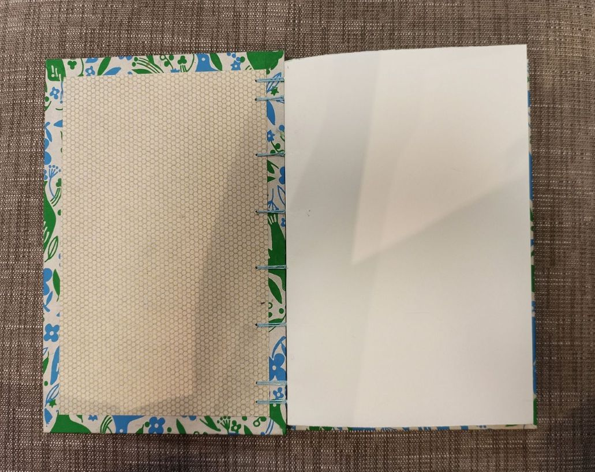
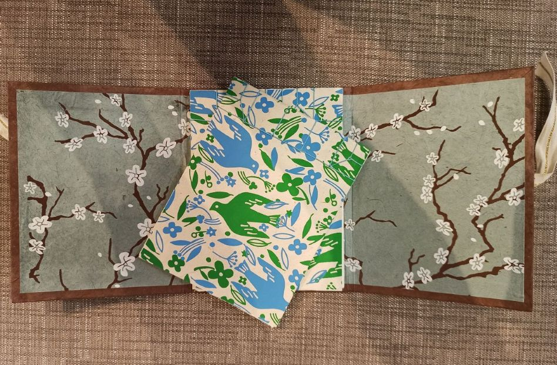
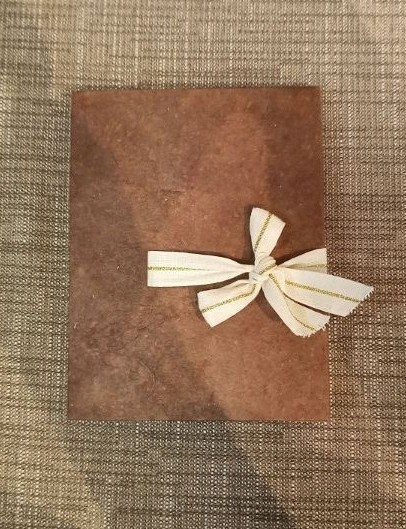

These are some of the books that I have made. This semester, I began exploring bookmarking and artist books, and it has been amazing to learn about. I have gained a deep appreciation for the intricacy of book design, from the aesthetics to the structural techniques that bring each piece together. Learning about different binding styles and their historical and functional significance has been fascinating. Each method offers a unique way to connect the pages and cover, and tell a story - not just through words, but through the craftsmanship and thought that goes into a book. Learning about bookmaking has given me a new creative avenue and is another thing to explore and push the boundaries of my creativity.
Hard Cover with Clamshell
The hard cover book is covered using japanese paper, and book cloth for the spine. The clamshell uses the same material with the grey book cloth and japanese paper. The clamshell is fitted to this book and it's specific dimensions.
Coptic Book
 

This hardcover book with an exposed spine is called a coptic book. This book type is known for being able to lay completely flat on a surface. Each signature of the book is held together by the stitching on the spine. The front and back cover just have 2 simple decorative papers.
Portfolio Case with Japanese Stab Binding
 This simple portfolio was designed specifically to store 2 small books that use Japanese stab binding. The Japanese stab binding is typically used to collect multiple separate pieces of paper as a collection. There are multiple different bindings, these feature both the hemp leaf and the noble binding. The portfolio is made from simple book board, decorative paper, and ribbon.